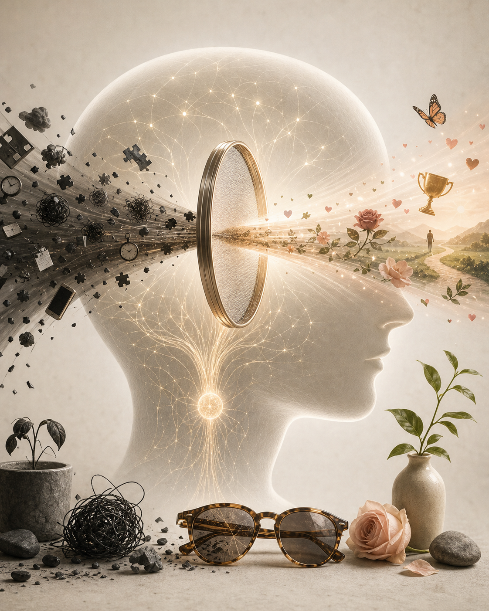

找愛心
每天刻意找一個心形。看見後停一下、拍照、撿起來或只是多看幾秒，等於在獎勵大腦：謝謝你，這就是我要你注意的方向。
Mel Robbins 把「心態」從一句勵志口號，拉回到日常心理習慣：你看世界的濾鏡、你反覆抓住的念頭、以及你能不能在行動前，先讓大腦替你看見一點可能。
觀看原始影片這集真正有用的地方，不是叫你把糟糕的事想成好事，而是教你辨認：很多時候，困住你的不是現實本身，而是大腦每天自動套上的濾鏡。
Mel 用一個很生活化的比喻定義 mindset：它像一副太陽眼鏡。你的信念與意見，就是鏡片的顏色。悲觀的人不是每天故意要掃興，而是透過一副深色鏡片看世界；有 can-do attitude 的人也不是沒有問題，而是更容易在同一個現場看見可能性。
這個比喻重要，因為它把「改變心態」從抽象道德要求，變成一個可以操作的問題：我現在戴的是什麼顏色的鏡片？它讓我忽略了什麼？它讓我採取或放棄了哪些行動？

這集的核心工具來自 Mel 對 RAS 的通俗化說明。她把它說成大腦裡的「過濾器」：世界資訊太多，大腦必須決定什麼進入意識。問題是，如果你每天餵給它的都是失敗、羞恥、比較與危險，它就會忠實地幫你找到更多相同證據。
所以 mindset reset 的第一步，不是壓抑負面念頭，而是重新指定注意力。你要讓大腦體驗到：它可以被訓練，它可以在同一個世界裡，開始放進別的訊號。
心態重設不是否認現實，而是把行動前的第一個念頭，從「我不行」換成「也許我可以試試」。
這個差別很小，卻足以改變一個人是否打開帳單、投出履歷、走進聚會，或在失望後重新開始。
Mel 的方法刻意設計得非常日常。第一個練習是「找愛心」：在咖啡泡沫、地上的影子、葉子、石頭、衣服圖案裡找心形。聽起來像遊戲，但重點不是愛心，而是讓你親身經驗到：當你告訴大腦某件事重要，它真的會開始幫你找。
第二個練習是 thought substitution。當腦中出現「如果失敗怎麼辦」「如果被拒絕怎麼辦」，把它換成「如果成功了呢」「如果這次有幫助呢」。她沒有保證事情一定會成功，而是用另一個同樣未知、但更能促成行動的問題，替換掉讓人退縮的預設問題。
每天刻意找一個心形。看見後停一下、拍照、撿起來或只是多看幾秒，等於在獎勵大腦：謝謝你，這就是我要你注意的方向。
把「如果不行呢」換成「如果可行呢」。這不是盲目樂觀，而是在同樣不確定的未來裡，選擇一個更可能讓你起身行動的提問。
若你習慣掃描自己哪裡不夠好，就改成每天找一個小勝利。大腦需要新證據，才會慢慢相信新的敘事。
她提醒，心態不只和念頭有關，也和你反覆靠近的人與環境有關。少追逐讓你覺得自己很糟的地方，多待在讓你回到自己的關係裡。
影片後半段談到一個普遍念頭：「我不夠好」。Mel 認為它常來自早期家庭經驗、成長中的比較、青春期尋找歸屬時形成的保護機制。久了之後，它不像一句話，而像背景噪音，讓人自動掃描自己不屬於哪裡、不配得到什麼。
這裡的洞見是：你不必把每個自我批判都當成真理。有些念頭只是舊程式，是別人的聲音在你腦中留下的迴音。你可以承認它出現，但不必跟著它走。重設心態不是一次完成，而是一次又一次，在被舊念頭勾住前，把自己帶回新的方向。
這集給一般讀者的價值，在於它把「改變心態」變成一種很小、但可重複的日常訓練。你不需要先相信自己已經完全好了，也不需要假裝人生沒有難題。你只需要在今天，給大腦一個新的任務：幫我找一點證據，證明我可以重新開始。
原始影片：Mindset Reset: Take Control of Your Mental Habits | The Mel Robbins Podcast，Mel Robbins，YouTube。
內容依 2026-06-12 取得的 YouTube 英文字幕與 oEmbed metadata 整理；自動字幕可能存在少量辨識誤差。
本文為教育與資訊整理，不能替代醫師、心理治療師或其他合格專業人士的建議。
頁面使用 AI-generated editorial images 作為雜誌式視覺呈現。